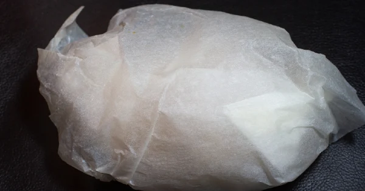
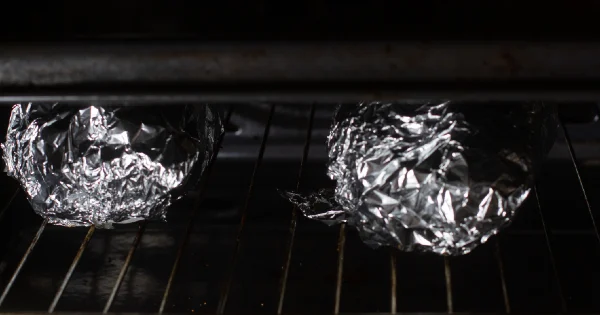
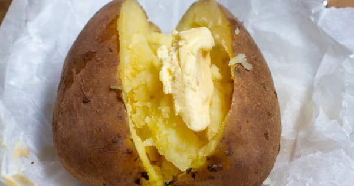
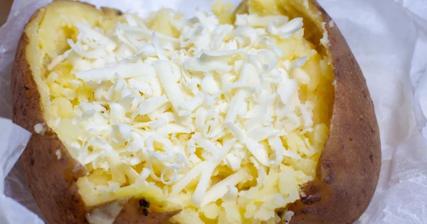
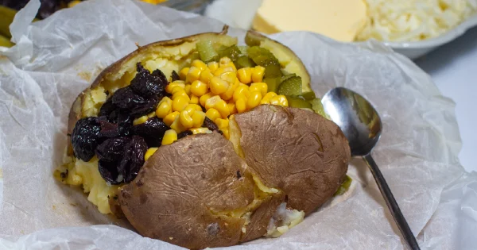
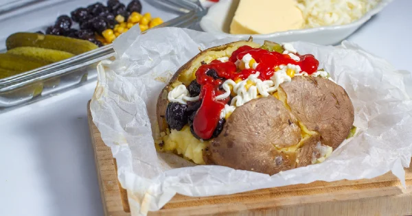

...Kumpir...
Fırında uzun süre pişen büyük boy patatesler,
kumpirin olmazsa olmazı
oda sıcaklığında bekletilen tereyağı ve rendelenmiş kaşar peyniriyle buluştuktan
sonra canınızın çektiği tüm malzemelere ev yapımı kumpir tarifinde yer var.
Tarif-Yazar:İbrahim bayburtlu
Kumpir Malzemeleri
| Kaç kişilik |
Hazırlanma Süresi |
Pişirme Süresi |
| 2 |
15 |
90 |
Kumpir Malzemeleri
- 2 adet büyük boy patates
- 2 yemek kaşığı tereyağı
- 3/4 su bardağı rendelenmiş kaşar peyniri
- 1 çay bardağı haşlanmış mısır
- 1/2 su bardağı çekirdekleri çıkarılmış zeytin
- 4-5 adet kornişon turşu
- 2 yemek kaşığı mayonez
- 2 yemek kaşığı ketçap
- 1/4 çay kaşığı tuz
Kumpir Tarifinin Pişirme Önerisi
Büyük boy, düzgün ve belirli bir kalınlıkta olan patatesleri seçmiş olmanız önemli.
Fırından çıkan patateslerin orta kısmını açtıktan sonra vakit kaybetmeden tereyağı ve rendelenmiş kaşar peyniriyle patatesin iç kısmını ezmelisiniz.
Kumpir Tarifinin Pişirme Önerisi-2
Fansız programda fırını çalıştırırsanız patateslerin içinin nemli kalmasına yardımcı olursunuz.
Kumpir Tarifi Nasıl Yapılır?
- Patatesi güzelce yıkayıp kağıt havluyla kurulayın ve iyice kurumasını bekleyin.
Kuruyan patatesin üzerini önce bir fırın kağıdı ile sarın.

- Daha sonra üzerini alüminyum folyo ile kaplayın.Önceden 200 derece ısıttığınız fırının tabanına patatesi yerleştirin.
Ters çevirdiğiniz bir tepsiyi çok az aralık kalacak şekilde üzerine kapatın.
Bu şekilde yaklaşık 90 dakika pişirin.

- Fırından çıkardığınız patatesi ortadan dikey şekilde kesin ve arzu ettiğiniz kadar tereyağı ilave edin.

- Kaşar peyniri ile orta kısımlarını ezin.

- Daha sonra kumpirlerinizi bir tabağa alın ve üzerine dileğiniz malzemeleri ekleyin.

- Damak tadınıza göre en üste mayonez, ketçap da ekleyebilirsiniz. Afiyet olsun!
